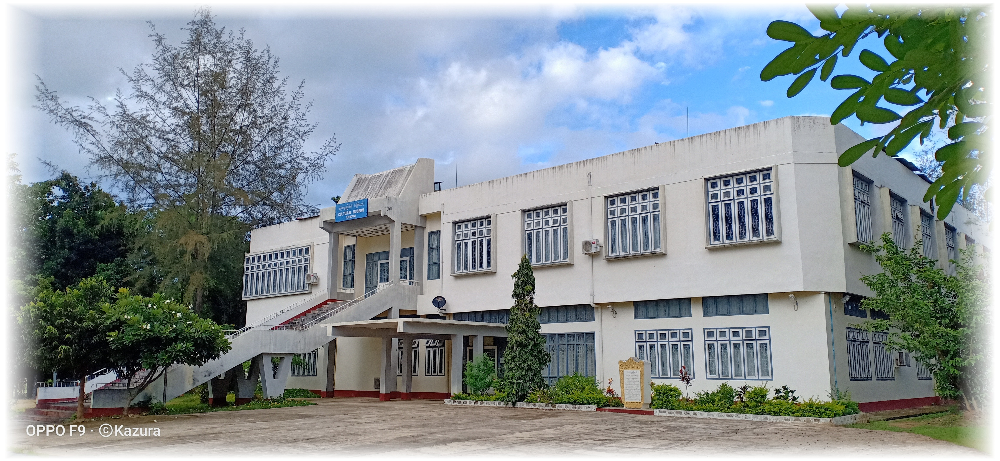

ပြခန်းများ

ကယားမျိုးနွယ်စုပြခန်း
ယဉ်ကျေးမှုပြတိုက်(လွိုင်ကော်)

ရိုးရာအသုံးအဆောင်ပြခန်း
ယဉ်ကျေးမှုပြတိုက်(လွိုင်ကော်)

ရိုးရာအဆင်တန်ဆာပြခန်း
ယဉ်ကျေးမှုပြတိုက်(လွိုင်ကော်)

ရိုးရာတူရိယာပြခန်း
ယဉ်ကျေးမှုပြတိုက်(လွိုင်ကော်)

ကယားပြည်နယ်သမိုင်း၀င်မှတ်တမ်းများပြခန်း
ယဉ်ကျေးမှုပြတိုက်(လွိုင်ကော်)
ယဉ်ကျေးမှုပြတိုက်လွိုင်ကော်တွင်ပြသထားသည့်ရှေးဟောင်းပစ္စည်းများ

မင်္ဂလာဖားစည်
၁၈ရာစုတွင် ကယားပြည်နယ်အတငွ်းနေထိုင်ကြသည့်ဒေသခံတိုင်းရင်းသားများသည် အိမ်သစ်တက်ပွဲ၊ မင်္ဂလာရှိသောအခမ်းအနားနှင့် စစ်ချီတက်ရာ၌ တီးခတ်လေ့ရှိပြီး (ပဉ္စလောဟာ)သတ္တု(၅)မျိုးဖြင့်
သွန်းလုပ်ထားသည်။

စောလဖော်အမြာက်ငယ်
အမြောက်ကိုစောဖျာစောလဖော်၏တူ စဝ်လဝီကမန္တလေးမှ ကြေးသွန်းအတတ်ပညာရှင်များကို
စောလုံမြို့သို့ခေါ်ဆောင်လာပြီး
ယင်းလက်နက်ကို၁၉ရာစုနှောင်းပိုင်းခန့်က
သွန်းလုပ်စေခဲ့ပါသည်။
စောလဖော်အမြောက်ငယ်သည်
စောဖျာစောလဖော်လက်ထက်က
သွန်းလုပ်ခဲ့သောအမြောက်(၃)လက်အနက်
တစ်လက်ဖြစ်ပါသည်။

စေလုံဟော်နန်းငယ်
ဘော်လခဲနှင့် (၁၀)မိုင်ခန့်ဝေးသောစောလုံမြို့တွင် တည်ရှိခဲ့ပြီး စောဖျာစဝ်လဝီနေထိုင်ခဲ့ပါသည်။
၁၉၈၈ခုနှစ်တွင် မီးလောင်ပျက်စီးခဲ့ပါသည်။